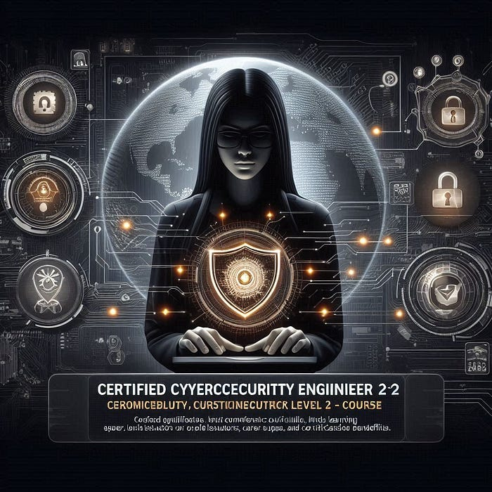

The Imperative Of Cybersecurity: Safeguarding Our Digital Future
In an era where technology drives almost every aspect of our lives, cybersecurity has become a crucial field of concern. As we continue to integrate advanced technologies into our daily routines, the security of our digital environments has never been more important. From protecting personal information to safeguarding corporate assets, cybersecurity is essential for maintaining trust and security in our interconnected world. This comprehensive guide will delve into the significance of cybersecurity, common threats, best practices, and emerging trends to help you understand and fortify your digital defenses.
The Importance of Cybersecurity
1. Protecting Personal Information
In our digital age, personal data is incredibly valuable. Identity theft, financial fraud, and privacy invasions are some of the critical risks associated with inadequate cybersecurity measures. Personal information such as Social Security numbers, credit card details, and medical records are prime targets for cybercriminals. Protecting this data is paramount to preventing unauthorized access and misuse.
2. Securing Corporate Assets
For businesses, cybersecurity is not just about protecting sensitive information; it’s about safeguarding intellectual property, customer data, and operational integrity. Cyberattacks can lead to substantial financial losses, legal repercussions, and damage to a company’s reputation. Effective cybersecurity strategies are crucial for maintaining business continuity and trust with clients and partners.
3. National Security
Cyber threats extend beyond individual and corporate concerns to national security. State-sponsored cyberattacks and cyber espionage can target critical infrastructure, including power grids, water supplies, and transportation systems. Ensuring robust cybersecurity measures is essential for the protection of national interests and public safety.
Common Cybersecurity Threats
1. Phishing Attacks
Phishing is a common and deceptive tactic used by cybercriminals to trick individuals into divulging sensitive information. These attacks often come in the form of emails or messages that appear to be from legitimate sources but are designed to steal personal data. Education and awareness are key to recognizing and avoiding phishing attempts.
2. Ransomware
Ransomware is a type of malware that encrypts a victim’s files and demands a ransom for their release. This type of attack can cripple organizations by rendering critical data inaccessible. Regular backups and robust security protocols are essential for mitigating the impact of ransomware attacks.
3. Malware
Malware, or malicious software, encompasses a range of threats designed to damage, disrupt, or gain unauthorized access to systems. Viruses, worms, and Trojans are examples of malware that can compromise the integrity of computer systems. Effective antivirus solutions and regular system updates are crucial for protecting against malware.
4. Denial-of-Service (DoS) Attacks
DoS attacks overwhelm a system or network with traffic, rendering it unavailable to users. Distributed Denial-of-Service (DDoS) attacks, which use multiple systems to launch the attack, can be particularly devastating. Implementing traffic filtering and rate-limiting measures can help mitigate the effects of DoS attacks.
Best Practices for Cybersecurity
1. Implement Strong Password Policies
Strong, unique passwords are the first line of defense against unauthorized access. Encourage the use of complex passwords and implement multi-factor authentication (MFA) to add an extra layer of security. Password management tools can help users maintain and secure their credentials.
2. Regular Software Updates
Keeping software up to date is essential for protecting against vulnerabilities. Software developers frequently release updates and patches to address security flaws. Regularly updating operating systems, applications, and antivirus software helps protect against known threats.
3. Educate and Train Users
Human error is a significant factor in many cybersecurity breaches. Providing regular training and awareness programs can help users recognize potential threats and understand best practices for maintaining security. Simulated phishing exercises and security awareness workshops can be effective educational tools.
4. Back Up Data
Regularly backing up important data ensures that you can recover your information in the event of a cyberattack or system failure. Implement a robust backup strategy that includes both on-site and off-site backups, and regularly test the restoration process to ensure data integrity.
5. Secure Networks
Implementing strong network security measures is crucial for protecting against unauthorized access and data breaches. Use firewalls, intrusion detection systems, and encrypted communication protocols to secure your network. Regularly monitor network traffic for unusual activity and vulnerabilities.
Emerging Trends in Cybersecurity
1. Artificial Intelligence and Machine Learning
Artificial Intelligence (AI) and Machine Learning (ML) are transforming cybersecurity by enabling advanced threat detection and response. AI-driven systems can analyze vast amounts of data to identify patterns and anomalies, enhancing the ability to detect and mitigate potential threats in real-time.
2. Zero Trust Architecture
Zero Trust Architecture is a security model that assumes no entity, whether inside or outside the network, is trusted by default. This approach requires continuous verification of users and devices, ensuring that only authorized entities have access to specific resources. Implementing Zero Trust principles can enhance overall security posture.
3. Quantum Computing
Quantum computing has the potential to revolutionize cybersecurity by solving complex problems that are currently beyond the capabilities of classical computers. However, it also poses new challenges, such as the potential to break existing encryption methods. Preparing for the impact of quantum computing on cybersecurity is an area of active research and development.
4. Privacy Regulations and Compliance
As data privacy concerns grow, regulatory frameworks such as the General Data Protection Regulation (GDPR) and the California Consumer Privacy Act (CCPA) have been established to protect personal information. Staying compliant with these regulations is essential for avoiding legal repercussions and maintaining trust with stakeholders.
Conclusion
Cybersecurity is an ever-evolving field that requires continuous vigilance and adaptation. By understanding the importance of cybersecurity, recognizing common threats, implementing best practices, and staying informed about emerging trends, individuals and organizations can better protect themselves against cyber threats. As technology continues to advance, investing in robust cybersecurity measures will be crucial for ensuring the safety and integrity of our digital future. Embracing a proactive and informed approach to cybersecurity is the best defense against the growing array of cyber threats in our interconnected world.

Cybersecurity
Protect the digital world with Avanteia’s Cybersecurity course! Gain in-depth knowledge of data protection, threat analysis, and defense mechanisms. Learn from experienced professionals and get hands-on experience tackling real-world cybersecurity challenges. Earn certifications that will set you apart and open doors to exciting job opportunities.
Contact Us
Phone: +919307402403
Email: info@avanteia.com
Branch Locations: Mapusa, Margao, Pernem, Goa